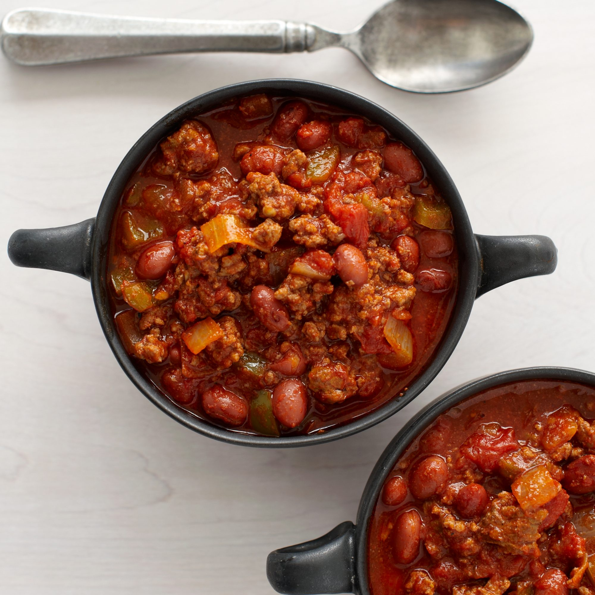

Classic Chili

Chili is a classic comfort food that is perfect for chilly days. Made
with ground beef or turkey, beans, tomatoes, and a blend of chili spices
such as cumin, garlic powder, and paprika, this hearty dish is sure to
warm you up. The rich, savory, and flavorful broth is perfect to be
served with toppings such as shredded cheese, sour cream, and chopped
green onions. The dish is easy to make and it's perfect for feeding a
crowd, whether it's a potluck, family dinner, or game day. You can also
customize it to your liking, whether you want it to be more spicy or
less spicy, adding more beans or meat, etc. Chili is a versatile dish
that will be a favorite among all ages.
Ingredients:
- 1 tablespoon olive oil
- 1 medium yellow onion -diced
- 1 pound 90% lean ground beef
- 2 1/2 tablespoons chili powder
- 2 tablespoons ground cumin
- 2 tablespoons granulated sugar
- 2 tablespoons tomato paste
- 1 tablespoon garlic powder
- 1 1/2 teaspoons salt
- 1/2 teaspoon ground black pepper
- 1/4 teaspoon ground cayenne pepper* -optional
- 1 1/2 cups beef broth
- 1 (15 oz.) can petite diced tomatoes
- 1 (16 oz.) can red kidney beans, drained and rinsed
- 1 (8 oz.) can tomato sauce
Instructions:
-
Add the olive oil to a large soup pot and place it over medium-high
heat for two minutes. Add the onion. Cook for 5 minutes, stirring
occasionally.
-
Add the ground beef to the pot. Break it apart with a wooden spoon.
Cook for 6-7 minutes, until the beef is browned, stirring
occasionally.
-
Add the chili powder, cumin, sugar, tomato paste, garlic powder, salt,
pepper, and optional cayenne. Stir until well combined.
-
Add the broth, diced tomatoes (with their juice), drained beans, and
tomato sauce. Stir well.
-
Bring the liquid to a low boil. Then, reduce the heat (low to
medium-low) to gently simmer the chili, uncovered, for 20-25 minutes,
stirring occasionally.
-
Remove the pot from the heat. Let the chili rest for 5-10 minutes
before serving.
Previous
Home
Next